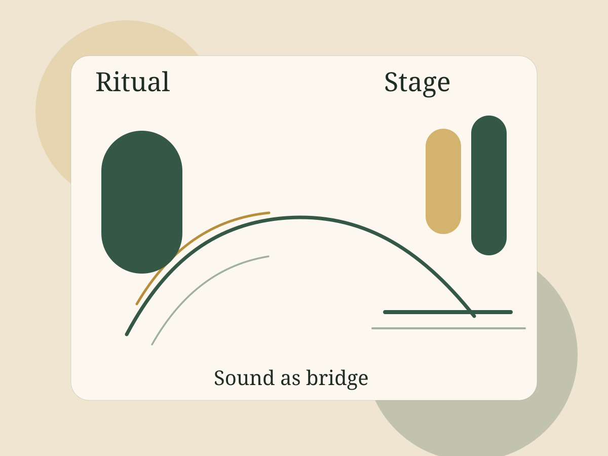
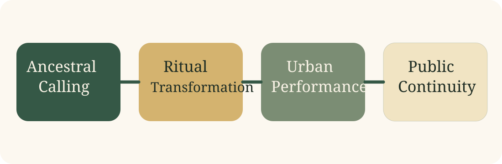

Theory
Theoretical Framework
Defines sonic invocation through Blacking, Rouget, and Turner.
Read frameworkDigital Research Archive
Venda possession, sonic invocation, and the modern performance world of Philip Tabane.

Sonic invocation: in this archive, sound is treated not as ornament or representation, but as an active force that calls, transforms, heals, and reorganizes social space.
Abstract
This project examines Malombo as both a Venda healing practice and a modern performance language shaped by Philip Tabane. Rather than reading ritual possession and urban jazz performance as separate worlds, the archive argues that Malombo persists through transformation. In Venda healing, cyclical drumming, chant, and dance do not simply represent spirituality; they participate in the invocation of ancestral presence and the reordering of embodied experience. In Tabane’s work, these ritual logics move into amplified, urban, and festival settings without disappearing. The result is not a simple conversion of tradition into jazz, but a rearticulation of ritual structure within new sonic and political contexts. Drawing on John Blacking, Gilbert Rouget, Victor Turner, Mudzunga Junniah Davhula, Sello Edwin Galane, and Veit Erlmann, this site presents Malombo as a system of action: a mode of healing, trance induction, cultural sovereignty, and sonic world-making. By centering audio, citation, and archival form, the project treats Malombo as an audible argument about what music does in the world.
Archive Pathways
Theory
Defines sonic invocation through Blacking, Rouget, and Turner.
Read frameworkContext
Tracks competing meanings of Malombo in apartheid-era South Africa.
Study historyPractice
Maps possession, drumming, healing, and embodied trance.
View ritual practiceListening
Centers the track “Sangoma” through timestamped listening notes.
Open listening roomArgument Spine
Ritual invocation establishes sound as effective action.
Repetition and trance become sonic structure.
Tabane translates ritual logic into modern performance.
Festival circulation reframes, but does not erase, invocation.
Visual Argument
The archive follows a single conceptual motion: ritual invocation becomes sonic structure, sonic structure becomes modern performance, and modern performance enters festival circulation without losing its spiritual architecture.

Featured Theorists
The archive’s conceptual core comes from a conversation between ethnomusicology, ritual theory, and embodiment studies. Those frameworks give language to what Malombo already knows through practice.
Open the framework pageFeatured Listening
The site treats this recording as an audible threshold. It demonstrates how trance-like cyclicality, textural build, and invocation move from healing ritual into a public performance idiom.
Enter the listening room